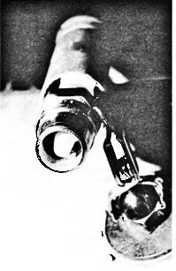
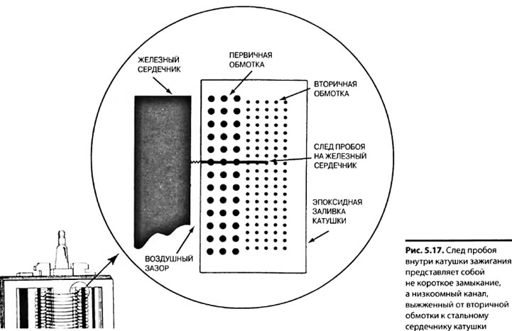

Проверка системы зажигания

ПРОВЕРКА СИСТЕМЫ ЗАЖИГАНИЯ НА ИСКРУ
Если двигатель не заводится, в первую очередь необходимо проверить наличие высокого напряжения на выходе катушки зажигания и на свечах зажигания. Если двигатель оснащен катушкой зажигания, выполненной в виде отдельного узла, необходимо отсоединить вывод катушки от центральной клеммы на крышке распределителя зажигания, подсоединить к нему искровой пробник и прокрутить двигатель. Прочитайте заметку "Только искровой пробник даст точный ответ" далее в этой главе. Если система зажигания и катушка зажигания исправны, то в искровом пробнике будет видна голубая искра (рис. 5.15).
Рис. 5.15. Пример подключения искрового пробника в двигателе с бесконтактной (т.е. без механического распределителя зажигания) системой зажигания. Искровой пробник заземлен на болт клапанной крышки головки блока цилиндров. На фотографии показан рекомендуемый тип искрового пробника, у которого центральный электрод заглублен в окружающий его изолятор
С помощью тахометра
Определяя причину того, по которой двигатель не заводится или работает с перебоями, проследите за показаниями тахометра. Если тахометр при прокручивании двигателя не показывает количество оборотов двигателя (когда двигатель не заводится) или его показания падают до нуля (при перебоях в работе двигателя), то проблема связана с неисправностью первичной цепи зажигания. Тахометр работает по импульсному сигналу коммутации первичной обмотки катушки зажигания. Нарушение работы тахометра при прокручивании двигателя может быть связано со следующими элементами первичной цепи зажигания:
• Магнитоэлектрический датчик.
• Датчик углового положения коленчатого вала.
• Модуль управления зажиганием.
• Первичная обмотка катушки зажигания.
Если автомобиль не оснащен тахометром, подключите переносной тахометр к минусовому выводу первичной обмотки катушки зажигания. Запомните:
Показания тахометра отсутствуют— это означает, что проблема связана с неисправностью первичной цепи зажигания.
Показания тахометра в норме — это означает, что проблема связана с неисправностью вторичной цепи зажигания или с нарушением работы топливной системы.
Если в диагностируемой системе зажигания невозможно добраться до катушки зажигания, отсоедините высоковольтный провод от одной из свечей, подсоедините к нему искровой пробник и проверьте наличие искры во время прокручивания двигателя.
Только искровой пробник даст точный ответ
Искровой пробник по внешнему виду напоминает свечу зажигания, но без бокового электрода, с разрядным промежутком между центральным электродом и заземляемым корпусом. Пробник оснащен, как правило, зажимом типа "крокодил", прикрепленным к корпусу, которым его легко закрепить в удобном месте двигателя, обеспечив контакт на "массу" автомобиля. Если система зажигания работает нормально, то она должна быть в состоянии "пробить"этот широкий промежуток, находящийся под атмосферным давлением. В отсутствие искрового пробника техник, убедившись, что в нормальной, заземленной свече зажигания проскакивает искра, мог бы решить, что с системой зажигания все в порядке. Для пробоя разрядного промежутка свечи зажигания, вынутой из двигателя и находящейся под атмосферным давлением, достаточно напряжения порядка 3000 В, не более. Для того чтобы пробить 3/4-дюймовый разрядный промежуток искрового пробника требуется напряжение, как минимум, 25 000 В. Поэтому искра в вынутой свече зажигания еще вовсе не означает, что система зажигания работает нормально— только искровой пробник даст точный ответ.
Запомните, прерывистая искра при прокручивании двигателя должна рассматриваться как неисправность системы зажигания, делающая невозможным пуск двигателя.
ПРИМЕЧАНИЕ
Прерывистую искру при прокручивании двигателя следует считать неисправностью системы зажигания, из-за которой двигатель не удается завести.
ВНИМАНИЕ
В большинстве бесконтактных систем зажигания (в которых отсутствует механический распределитель зажигания) высокое напряжение достигает 40 000 В и выше, а высоковольтный импульс имеет достаточно большую мощность и способен нанести поражение электрическим током человеку. Не разрывайте вторичную цепь зажигания в бесконтактной системе зажигания во избежание ее повреждения и поражения электрическим током.
Неисправен высоковольтный провод: замените катушку зажигания
При проведении испытаний двигателя (например, испытании на степень сжатия) обязательно соединяйте на «массу» обмотку катушки зажигания. Не допускайте высоковольтного разряда катушки зажигания в обход низкоомного канала на «массу», который должен быть специально создан для этого. Бесконтактные системы зажигания повышенной мощности способны генерировать напряжение амплитудой 40 000 В и выше. В отсутствие низкоомного канала для высоковольтного разряда на «массу» может произойти (и обычно происходит) внутренний дуговой пробой катушки зажигания, в результате чего внутри катушки возникает низкоомный канал на первичную обмотку или ее стальной сердечник (рис. 5.17). Этот низкоомный канал называется следом (дорожкой) пробоя и может оказаться причиной неустойчивой работы двигателя под нагрузкой, даже если все остальные элементы системы зажигания функционируют нормально. Зачастую такие следы пробоя не удается обнаружить при проверке катушки зажигания никакими способами, в том числе методами дефектоскопии. Поскольку след пробоя представляет собой канал пониженного, по сравнению с нормальным, сопротивления на землю, для того чтобы такой дефект проявился, необходимо, чтобы система зажигания работала под нагрузкой, но даже и тогда дефект (неустойчивая работа двигателя) может то проявляться, то исчезать.

Поэтому при отключении системы зажигания, во избежание повреждения катушки зажигания, следуйте приведенным ниже правилам:
1. Отключите питание системы зажигания для полного прекращения ее работы.
2. В системе зажигания с механическим распределителем зажигания отсоедините вывод катушки зажигания от центральной клеммы крышки распределителя и соедините его изолированной перемычкой на "массу" автомобиля. (Тем самым вы обеспечите канал разряда энергии, накопленной во вторичной обмотке, и устраните опасность высоковольтного пробоя катушки зажигания).